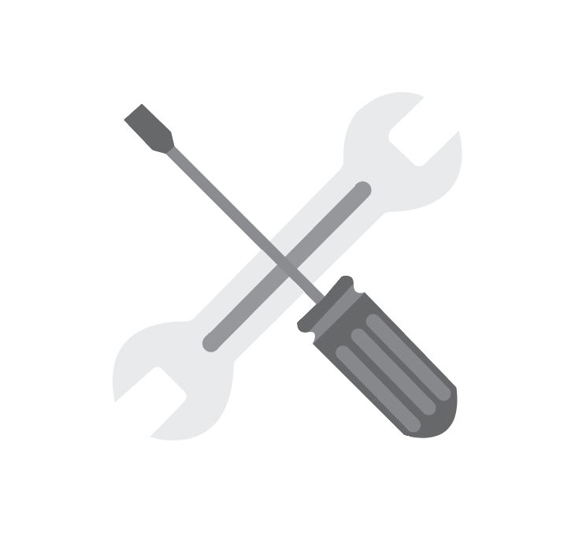

TRADITIONAL LIBRARIES
Originally, libraries were collections of books, manuscripts, journals, and other sources of recorded information. The collection of the traditional libraries are mostly print media, manuscripts etc. and are not well organized. The documents are deteriorating at a rapid rate, the collected information is not easy to locate and procure. Such information does not reach the user of the libraries on time. It is difficult to get such publications in the absence of personal influence and contacts.
There are certain restricted publications containing highly informative materials but may not be easily available. Sometimes the information is published after many years. By the time it is published, the information becomes obsolete and then abandoned. Since it is not properly indexed or listed, the researcher is forced to go through long and tedious process to ascertain whether any material of his/her interest is available or not. Here the collections are not well organized and some reports are deteriorating at a rapid rate. Preserving them in their original form is difficult and it is not cost effective. Again the traditional libraries are confined itself within a physical boundary.
In traditional libraries, user cannot easily locate a piece of information and have to spend more time in searching information. But in this age of Information Communication Technology (ICT), computers are being used for day to day housekeeping activities of the libraries, to read and download of texts of articles, reports and other materials. Thus, it saves time and makes the library service effective.
MODERN LIBRARIES
The library is now about being a living space for the users. The libraries have always been good at being aligned with what people want or need. That is a very important thing. Regarding the technology, libraries were the first movers around ’96 – they were the first ones to get computers to the library and to try to educate people on how to use computers. It is the library’s obligation to be at the edge of different uses of culture and uses of technologies.
Today, people are more focused on learning activities and they want social interaction together with the possibility to share their knowledge with others. Therefore, the “modern library” is a new development where libraries become a meeting and interaction place for people. The transactional library is where people are getting in the library, they ask for a book and the librarian gives it to them. As opposed to the modern library, where people enter the library and they are working together with the librarian. For this to happen, you have to establish a relation with the patron. The library transforms into a meeting place, and you have to facilitate that meeting. This is another way to establish relations. That means you are in need of new competencies.
Therefore, the library’s physical spaces and the needs of the different target groups of the library must be highly considered when defining the library’s structure
MAIN CHARACTERISTICS
RESOURCES
Tradtional libraries usually have books everywhere. Shelves and shelves of books line the walls of the library. Everyone is very aware of the resources available.
Modern libraries have a variety of resources and technology to use. Due to the array of resources, not all of them are displayed but computers and books are visible.
SPACES
Tradtional libraries have a center space for working. There is an obvious space to work and learn at and it is surrounded by the materials (books).
Modern libraries have multiple spaces available to work in. Different spaces allow for different needs that can be provided by libraries (kids, collaboration, quiet spaces).
FURNITURE
Traditional libraries mainly have wood based stained furnishing. This furnishing is iconic to traditional libraries because it is made of similar materials the books are made of. It also provides a classical setting.
Modern libraries will have more sleek and colorful furnishing.This type of furnishing gives a sense of movement, progress, and inspiration with the colors and shapes.
INTERACTIONS

In traditional libraries, the interaction with the space is very formal. The way the libraries are layed out, it provides a very formal and structural path of ineraction.
In modern libraries, the interaction with the space is very fluid/informal. The spaces and furniture offers informal interaction with the space- allowing people to walk around and explore.
KAREN DEWITT INTERVIEW
"[The libraries] have changed so much over the years I’ve been working. All of this command line searching is now on Google and it seems very simple but, there are still a lot of resources that are not digitized. There’s still a lot of things that you’ll still need to go to the paper copy for and we’re just trying to help people understand there’s only a limited amount of resources besides the internet.
There’s always some new questions and interests and projects that come up. It’s never a boring place, there are always interesting things to do.
I like the windows, I’m a big fan of the windows but they’re actually problematic in libraries. If you leave paper out in the sun it starts to turn brown and brittle. So basically we have a large amount of books sitting in the sunlight and that’s really not a good thing. I mean, it’s good for people working but it’s problematic for the space as it is. If you think about the millions of dollars we put into the library it’s really not a good thing.
Something you don’t know is that the main libraries (D.H. Hill and James B. Hunt) do a lot of work for [the Design library]. We are part of the whole NCSU library system. "